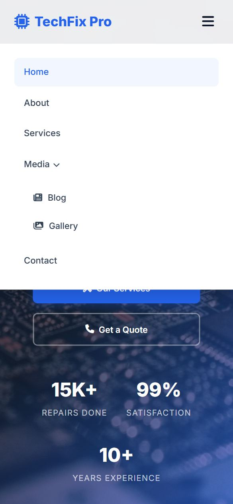

Lesson 9 · Shared Styles & Layout
Responsive Design, the Mobile Menu & Animations
More than half of all web visits come from phones. In this lesson you will make the shared parts of TechFix Pro adapt to small screens, build a working hamburger menu without any JavaScript, and add the gentle fade-in animation used throughout the site.
- About 60 minutes
- Edits:
styles.css

These show the finished Home page. Your page doesn't have a hero yet, so for now you'll see just the navbar and the footer.
By the end of this lesson you will be able to
- Write media queries that change styles at different screen widths.
- Preview your site at phone and tablet sizes using DevTools.
- Build a CSS-only toggle with a hidden checkbox,
:checkedand the~selector. - Create animations with
@keyframesand respect visitors who prefer less motion.
What is responsive design?
A responsive website rearranges itself to fit any screen. Three ingredients make it work, and you already have the first two:
- The
<meta name="viewport">tag in every page's head (Lesson 4). Without it, phones pretend to be a desktop and shrink everything. - Flexible sizes:
max-width: 100%on images,max-widthon containers, andfrunits in grids. - Media queries: CSS rules that only apply when the screen is a certain size.
/* "When the browser window is 768px wide OR LESS, apply these rules" */
@media (max-width: 768px) {
.footer-grid {
grid-template-columns: 1fr; /* one column instead of four */
}
}The rules inside a media query override the normal rules, because they come later in the file and only switch on at small sizes. TechFix Pro uses three breakpoints (the widths where the layout changes):
| Breakpoint | Typical device | What changes in the shared CSS |
|---|---|---|
max-width: 1024px | Tablets, small laptops | Footer goes from 4 columns to 2 |
max-width: 768px | Large phones, small tablets | Hamburger menu, smaller headings, 1-column footer |
max-width: 480px | Phones | Smaller buttons |
How to preview phone sizes
You don't need a phone to test. In Chrome or Edge:
- Press F12 to open DevTools.
- Press Ctrl + Shift + M (Cmd + Shift + M on Mac), or click the little phone-and-tablet icon at the top-left of DevTools. This is the Device Toolbar.
- Choose a device such as iPhone 12 Pro from the dropdown at the top, or drag the edge of the preview to any width.
You can also simply make your browser window narrower by dragging its edge.
Add the fade-in animation
Add at the bottom of styles.css:
styles.css/* ============================================
Animations (CSS-only fade in on page load)
============================================ */
@keyframes fadeUp {
from {
opacity: 0;
transform: translateY(30px);
}
to {
opacity: 1;
transform: translateY(0);
}
}
.fade-in {
animation: fadeUp 0.7s ease backwards;
}
.stagger-1 { animation-delay: 0.1s; }
.stagger-2 { animation-delay: 0.2s; }
.stagger-3 { animation-delay: 0.3s; }
.stagger-4 { animation-delay: 0.4s; }
/* Respect visitors who turn off animations in their device settings */
@media (prefers-reduced-motion: reduce) {
html { scroll-behavior: auto; }
.fade-in { animation: none; }
}@keyframes fadeUpdefines an animation namedfadeUp: it goes from invisible and 30px lower to fully visible in its normal place..fade-in { animation: fadeUp 0.7s ease backwards; }plays that animation once, over 0.7 seconds, when the page loads. Any element withclass="fade-in"will glide up into view.- The
stagger-1…stagger-4classes add a small delay, so items in a row appear one after another instead of all at once. backwardsmeans “use the from state during the delay”, so delayed items stay hidden until their turn.@media (prefers-reduced-motion: reduce)switches animations off for people who have told their device they want less motion (some people feel unwell with motion on screen).
Why backwards and not both?
Many cards use fade-in and lift up on hover with transform. An animation set to both or forwards keeps controlling transform after it ends, which would “freeze” the card so the hover lift never works. backwards lets go of the element as soon as the animation finishes.
Different from the original
The original site uses JavaScript to fade elements in as you scroll to them. Pure CSS can't detect scrolling in all browsers yet, so our version fades elements in when the page loads. You will add the fade-in classes to the HTML as you build each page.
Add the responsive rules
Add at the very bottom of styles.css (media queries always go last):
styles.css/* ============================================
Responsive
============================================ */
@media (max-width: 1024px) {
.footer-grid {
grid-template-columns: 1fr 1fr;
gap: 2.5rem;
}
}
@media (max-width: 768px) {
.nav-links {
display: none;
position: absolute;
top: 72px;
left: 0; right: 0;
background: var(--white);
flex-direction: column;
padding: 1.5rem;
gap: 0.25rem;
box-shadow: var(--shadow-lg);
border-top: 1px solid var(--border);
}
/* When the hidden checkbox is ticked, show the menu */
.menu-toggle:checked ~ .nav-links {
display: flex;
}
.nav-links > li { width: 100%; }
.nav-links a {
padding: 0.75rem 1rem;
width: 100%;
}
/* On phones the Media sub-menu is simply shown, indented */
.dropdown-menu {
position: static;
opacity: 1;
visibility: visible;
transform: none;
box-shadow: none;
border: none;
padding-left: 1rem;
}
.dropdown-menu::before { display: none; }
.mobile-menu-btn { display: block; }
.section-header h2 { font-size: 1.75rem; }
.page-header h1 { font-size: 2rem; }
.footer-grid {
grid-template-columns: 1fr;
gap: 2rem;
}
}
@media (max-width: 480px) {
.btn { padding: 0.75rem 1.25rem; font-size: 0.9rem; }
.btn-lg { padding: 0.875rem 1.75rem; }
}Understand the CSS-only mobile menu
Remember the hidden checkbox and the ☰ label from Lesson 7? Here is how they combine with the CSS you just added (at 768px and below):
.mobile-menu-btn { display: block; }makes the ☰ label visible on small screens..nav-links { display: none; position: absolute; top: 72px; … flex-direction: column; }hides the menu and, when it is shown, turns it into a full-width white panel under the bar, with links stacked in a column.- Tapping the ☰ label ticks the hidden checkbox (because the label's
formatches the checkbox'sid). - This rule then switches the menu on:
Read it as: “when
.menu-toggle:checked ~ .nav-links { display: flex; }.menu-toggleis checked, find the.nav-linksthat comes after it (the~means ‘a later sibling’) and display it.” - Tap ☰ again → the checkbox unticks → the menu hides.
Order matters!
The ~ selector only looks forwards. The checkbox must come before <ul class="nav-links"> in the HTML, and both must be inside the same parent (.nav-container). If your menu won't open, check this order.
On phones, the Media sub-menu is simply always shown inside the open menu, indented under “Media” (position: static puts it back in the normal flow, and opacity: 1; visibility: visible makes it visible).
Test at different sizes
Save, open any page and turn on the Device Toolbar (Ctrl + Shift + M). Choose a phone. Then:
- The menu links disappear and a ☰ icon appears at the top right.
- Tap ☰: the menu drops down, including Blog and Gallery under Media.
- Tap ☰ again: it closes.
- Scroll to the footer: its columns are now stacked.
- Switch to a tablet width (around 900px): the footer has 2 columns.
Checkpoint
Check that styles.css contains every block from Lessons 5–9, in order: heading comment, :root, reset, container, buttons, section header, page header, navbar, dropdown, mobile button, footer, animations and the three media queries.
Common mistakes
- Media query does nothing: check the brackets.
@media (max-width: 768px) {needs round brackets around the condition, and a closing}at the end of the whole block (as well as one for each rule inside it). - Layout doesn't change on my real phone: the viewport
<meta>tag is missing or misspelled. - Tapping ☰ does nothing: the label's
for="menu-toggle"and the checkbox'sid="menu-toggle"must match exactly.
Experiment
Change .fade-in's duration from 0.7s to 3s, then reload a page later in the course to see the effect in slow motion. Remember to change it back!